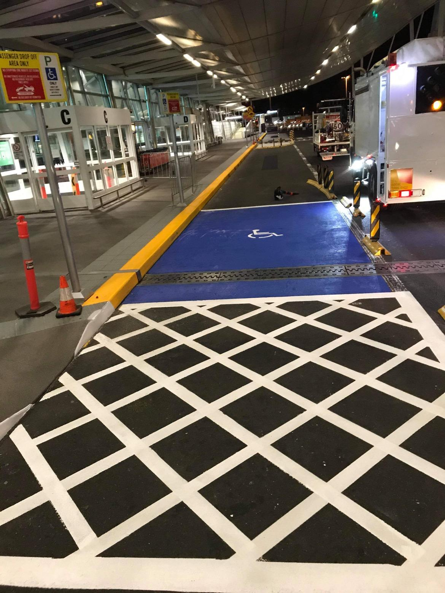
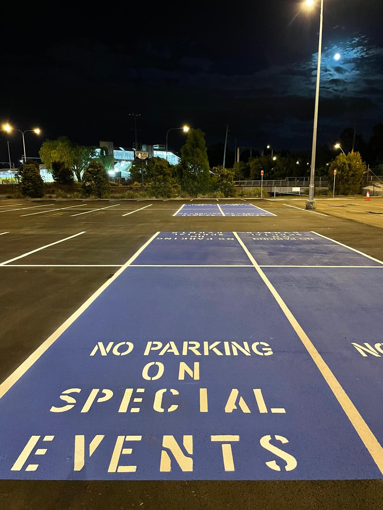
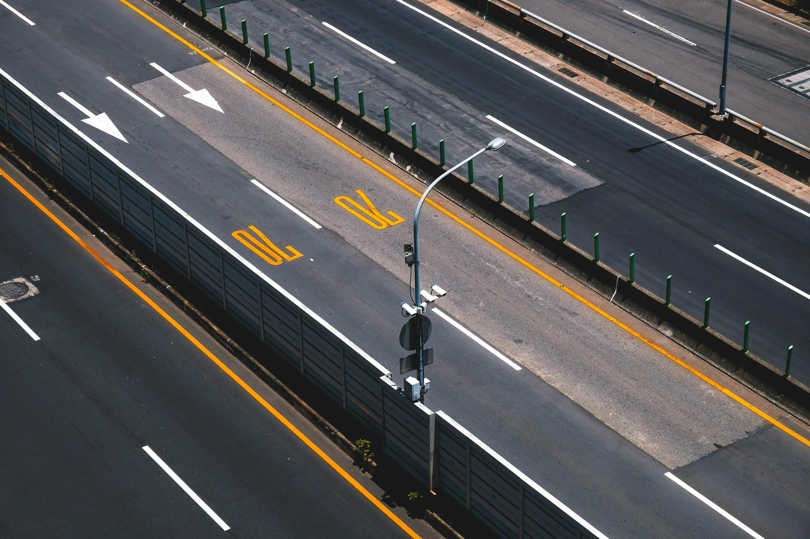
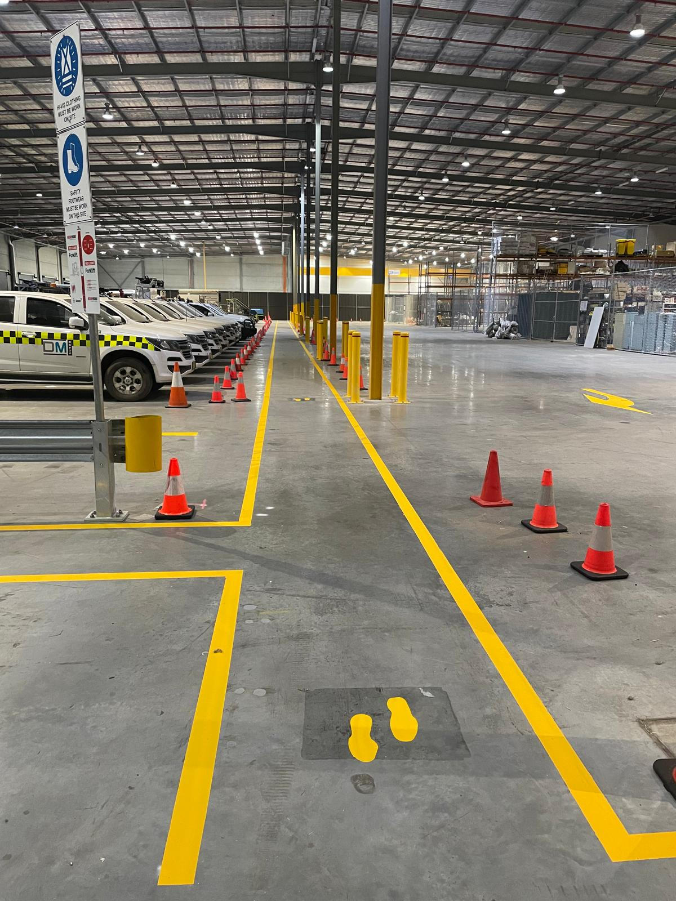
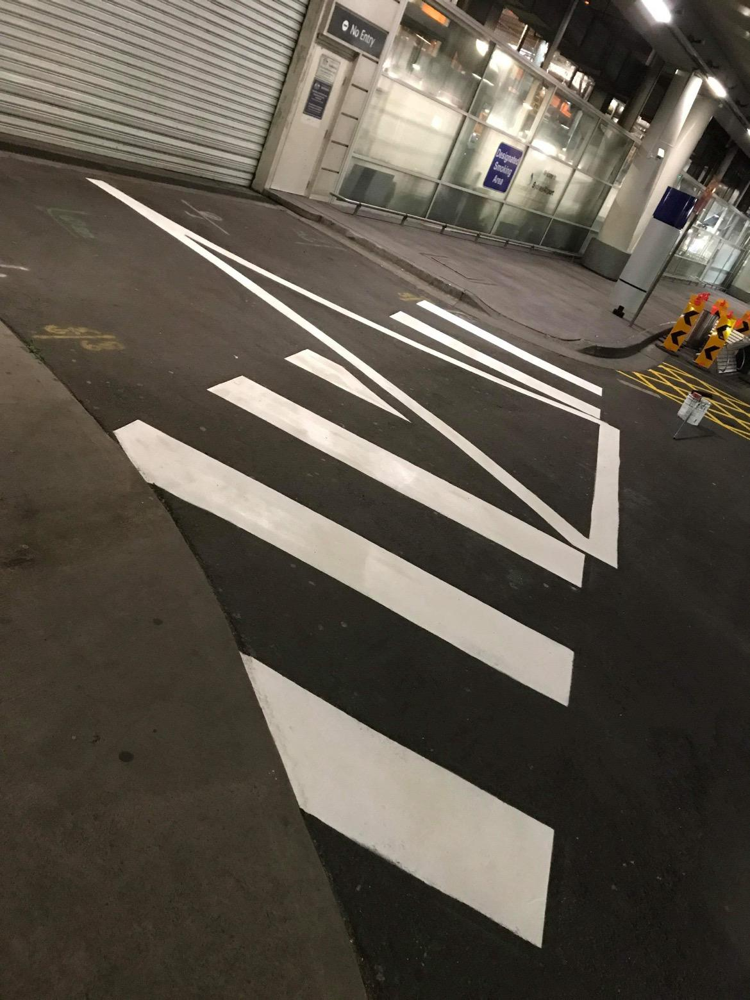
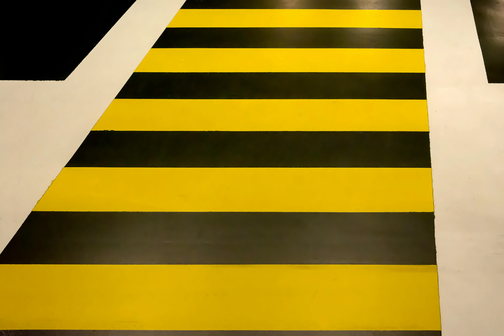
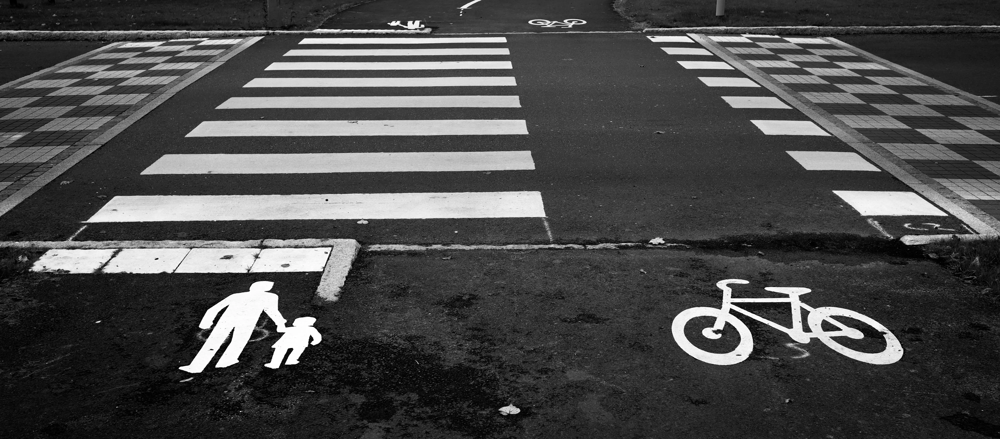

No Limit Line Marking
Fast Becoming Sydney Leader In Line Marking Services for Hospitals, Car Parks, Warehouses & Commercial Sites.
Our Services
• We provide professional line marking for parking lots, warehouses, sports courts, and industrial facilities. Our lines are durable, accurate, and visually striking.
• We specialize in high-quality, long-lasting line markings using advanced techniques and materials designed to withstand heavy traffic.
• From new installations to maintenance and repainting, we offer comprehensive line marking solutions tailored to your property’s needs.
Give No Limit Line Marking a call today!
Line Marking Projects Gallery







